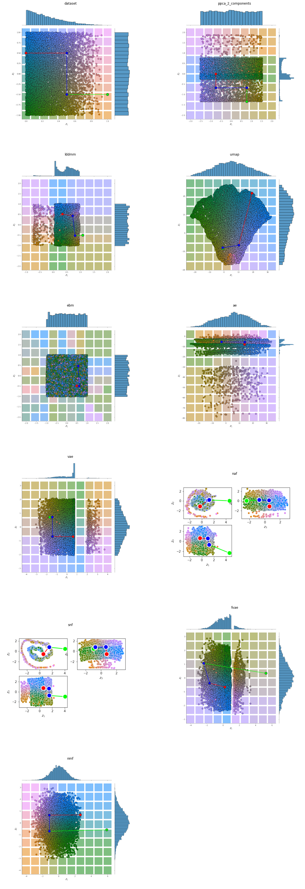
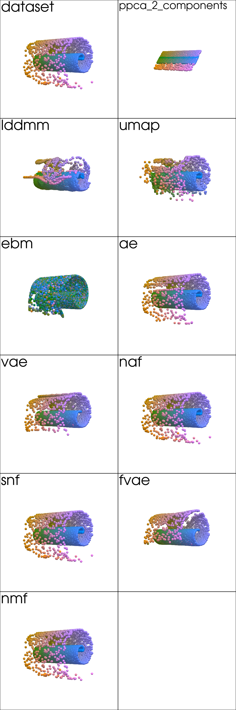
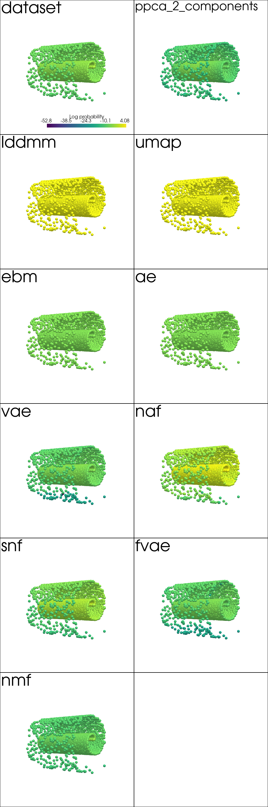
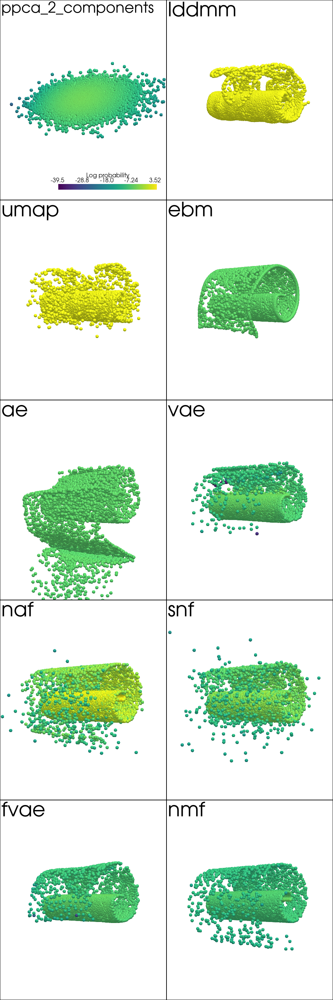
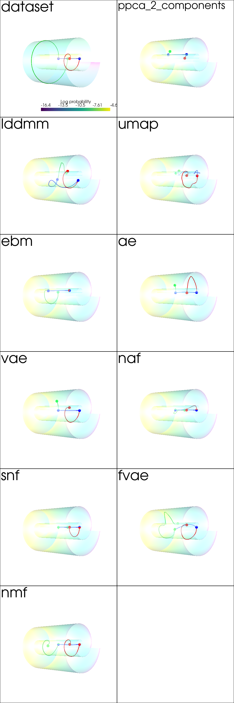

%load_ext autoreload
Swiss Roll Experiment¶
import os
import glob
import pickle
import imageio
import pandas as pd
import pyvista as pv
from itertools import product
from matplotlib import pyplot as plt
store_results = True
plot_order = ['dataset', 'ppca_2_components', 'lddmm', 'umap', 'ebm', 'ae', 'vae', 'naf', 'snf', 'fvae', 'nmf']
def read_plot_kwargs(file_name, file_extension='obj'):
if file_extension == 'obj': f_read = lambda f: pickle.load(open(f,'rb'))
if file_extension == 'png': f_read = lambda f: imageio.imread(f)
if file_extension == 'txt': f_read = lambda f: [open(f, "r").read()]
objs = {os.path.normpath(f).split('/')[-2]:f_read(f)
for f in glob.glob('../results/swiss_roll/*/{}.{}'.format(
file_name, file_extension), recursive=True)}
objs.pop('ppca_3_components')
return objs
pv.set_plot_theme("document")
pv.set_jupyter_backend('None')
plot_shape = (6, 2)
def plotter_for_each_panel(axis, f_plot, plot_kwargs, plot_shape):
keys = list(plot_kwargs.keys())
keys.sort(key=lambda e: plot_order.index(e))
n_keys = len(keys)
for i in range(plot_shape[0]):
for j in range(plot_shape[1]):
index = i * plot_shape[1] + (j)
if index == n_keys:
return
key = keys[index]
plotter.subplot(i, j)
plotter.add_text(key, font_size=24)
f_plot(**plot_kwargs[key], axis=axis)
def image_plotter_for_each_panel(imgs, plot_shape):
keys = list(imgs.keys())
keys.sort(key=lambda e: plot_order.index(e))
max_index = min(plot_shape[0]*plot_shape[1], len(keys))
for i in range(0, max_index):
key = keys[i]
g = fig.add_subplot(*plot_shape, i+1)
g.title.set_text(key)
plt.axis('off')
plt.imshow(imgs[key])
Input Representation¶
imgs = read_plot_kwargs('base_representation', 'png')
fig = plt.figure(figsize=(plot_shape[1]*10,plot_shape[0]*10))
image_plotter_for_each_panel(imgs, plot_shape)
plt.show()

Input Reconstruction¶
mse_errors = read_plot_kwargs('reconstruction', 'txt')
df_reconstruction = pd.DataFrame.from_dict(mse_errors, orient='index', columns=['MSE'])
df_reconstruction.reindex(plot_order)
| MSE | |
|---|---|
| dataset | NaN |
| ppca_2_components | 10.422249043973492 |
| lddmm | 5.1534423828125 |
| umap | 1.7059484720230103 |
| ebm | 135.48646545410156 |
| ae | 0.19316305220127106 |
| vae | 0.8526504635810852 |
| naf | 8.366670272152987e-07 |
| snf | 2.8050467903995013e-07 |
| fvae | 0.9597674012184143 |
| nmf | 0.0002189374208683148 |
from pdmtut.vis import plot_reconstruction
plot_kwargs = read_plot_kwargs('reconstruction')
plotter = pv.Plotter(shape=plot_shape, window_size=(500*plot_shape[1], 500*plot_shape[0]))
plotter_for_each_panel(plotter, plot_reconstruction, plot_kwargs, plot_shape)
plotter.link_views()
plotter.camera_position = [(-65, 0, 65), (0, 0, 0), (0, 1, 0)]
_ = plotter.show()

Density Estimation¶
data_log_likelihood = read_plot_kwargs('density', 'txt')
df_density = pd.DataFrame.from_dict(data_log_likelihood, orient='index', columns=['Log Likelihood'])
df_density.reindex(plot_order)
| Log Likelihood | |
|---|---|
| dataset | NaN |
| ppca_2_components | -8.538554969111125 |
| lddmm | 1.0 |
| umap | 1.0 |
| ebm | -7.6159820556640625 |
| ae | -7.60769510269165 |
| vae | -7.7125563621521 |
| naf | 0.27156203985214233 |
| snf | -4.133373737335205 |
| fvae | -8.800947189331055 |
| nmf | -8.880420684814453 |
from pdmtut.vis import plot_density
plot_kwargs = read_plot_kwargs('discrete_density')
plotter = pv.Plotter(shape=plot_shape, window_size=(500*plot_shape[1], 500*plot_shape[0]))
plotter_for_each_panel(plotter, plot_density, plot_kwargs, plot_shape)
plotter.link_views()
plotter.camera_position = [(-65, 0, 65), (0, 0, 0), (0, 1, 0)]
_ = plotter.show()

Generate Samples¶
from pdmtut.vis import plot_generated_samples
plot_kwargs = read_plot_kwargs('generated_samples')
plotter = pv.Plotter(shape=(plot_shape[0]-1, plot_shape[1]), window_size=(500*plot_shape[1], 500*plot_shape[0]))
plotter_for_each_panel(plotter, plot_generated_samples, plot_kwargs, (plot_shape[0], plot_shape[1]))
plotter.link_views()
plotter.camera_position = [(-65, 0, 65), (0, 0, 0), (0, 1, 0)]
_ = plotter.show()

Interpolation¶
from pdmtut.vis import plot_interpolation
plot_kwargs = read_plot_kwargs('interpolation')
plotter = pv.Plotter(shape=plot_shape, window_size=(500*plot_shape[1], 500*plot_shape[0]))
plotter_for_each_panel(plotter, plot_interpolation, plot_kwargs, plot_shape)
plotter.link_views()
plotter.camera_position = [(-65, 0, 65), (0, 0, 0), (0, 1, 0)]
_ = plotter.show()

Extra¶
table = pd.concat([df_reconstruction, df_density], axis=1)
print(table.reindex(plot_order).astype('float64').round(2).to_latex())
\begin{tabular}{lrr}
\toprule
{} & MSE & Log Likelihood \\
\midrule
dataset & NaN & NaN \\
ppca\_2\_components & 10.42 & -8.54 \\
lddmm & 5.15 & 1.00 \\
umap & 1.71 & 1.00 \\
ebm & 135.49 & -7.62 \\
ae & 0.19 & -7.61 \\
vae & 0.85 & -7.71 \\
naf & 0.00 & 0.27 \\
snf & 0.00 & -4.13 \\
fvae & 0.96 & -8.80 \\
nmf & 0.00 & -8.88 \\
\bottomrule
\end{tabular}